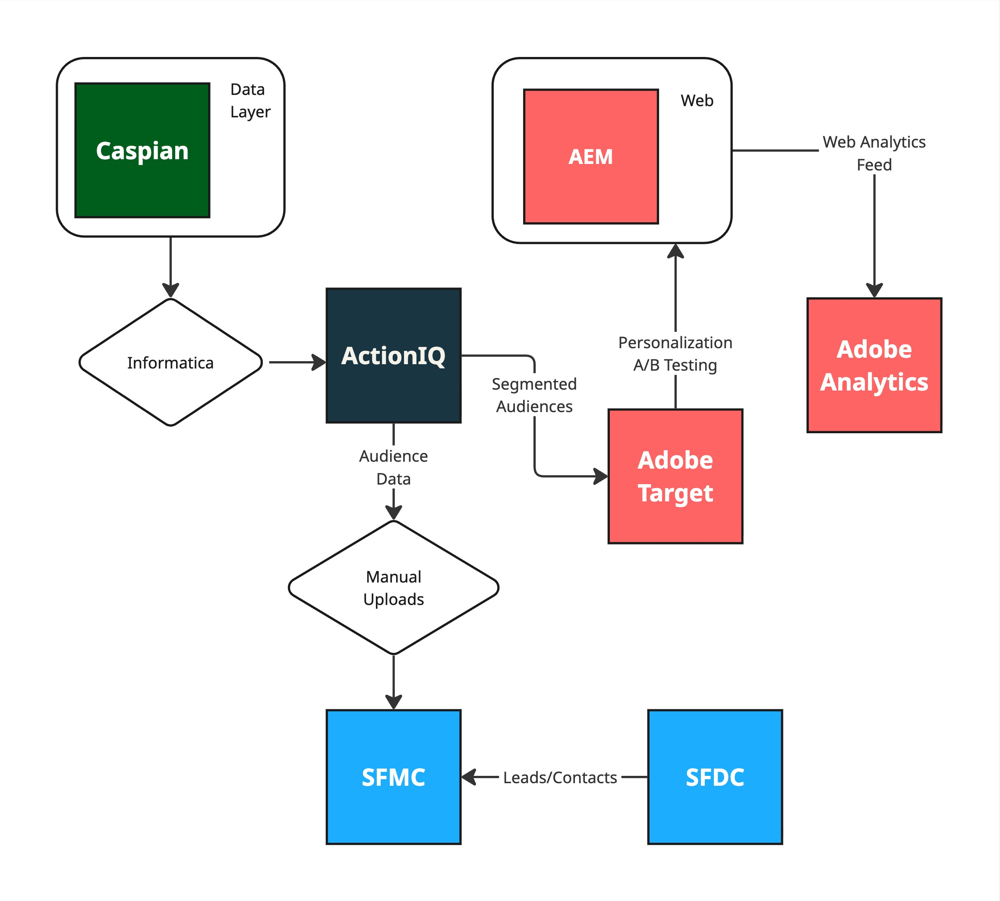
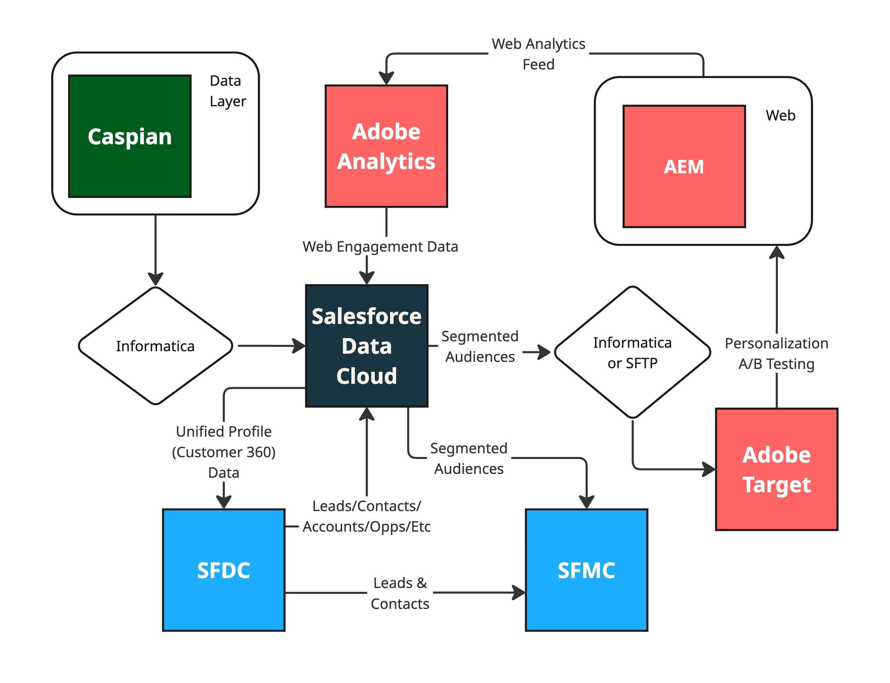

Lack of a unified customer 360-degree profile across channels is a major pain point. Currently, web engagement data captured by Adobe Analytics/Target is siloed from email engagement data stored in Salesforce Marketing Cloud (SFMC). Behavioral data is sent to Action IQ, but analysts often have to consult multiple sources to get a full picture. The primary ""magic wand"" request is to have good, clean data consolidated in one place to easily segment and target audiences
Data Cleanliness & Consistency
Data quality and consistency present a major organizational hurdle. Data discrepancies are common, and the team frequently has to clean data every time it is used. For example, the institutional lead vetting process is partly manual, and the sales operations team, which is responsible for updating CRM data, is not always reliable, which challenges personalization efforts. The organization is attempting to address this through the implementation of a universal Party ID as a unique identifier across all known audiences
CDP Complexity & Rigidity
Action IQ (AIQ), the current Customer Data Platform, is being replaced due to complexity handling. It particularly struggles with the complexity of institutional data (B2B side) due to rigid data table relationships and constraints. Advanced segmentation use cases are difficult to build, and changes to the data model require a significant amount of IT involvement, creating a bottleneck for the business.
Adobe Analytics Underutilization
The organization is not getting the full value out of Adobe Analytics due to a lack of dedicated resources. Reporting is described as cumbersome, and exporting data is challenging. A key limitation is the inability to capture the full user journey at the person level rather than the page level, which prevents the business from understanding engagement patterns and optimizing the customer experience.
Audience Journey Gap
A critical functionality gap exists in connecting web engagement data to automated email journeys. This was previously handled by Adobe Audience Manager, but that tool was degraded when the website was re-platformed. The long-term plan is to use Adobe Experience Platform (AEP) to bridge this gap, but the implementation is estimated to take 18-24 months, leaving a functional void in the interim.
Technical Debt in AEM
Significant technical debt is accumulating in Adobe Experience Manager (AEM) due to a large number of pages still using old templates and components. To leverage new features and functionalities, pages must be manually rebuilt on the new templates. This requires a major effort to modernize the web property and presents a barrier to innovation.
The current architecture relies on a set of integrated but often siloed systems. Data flows from a data warehouse (Informatica) and other sources into a data lake (Caspian), which then feeds the CDP (ActionIQ). The Adobe suite handles web content and analytics, while Salesforce is used for email marketing and CRM. Manual data handling is often required to bridge gaps between these systems.

Future State Architecture
The recommended future state centers on replacing ActionIQ with Salesforce Data Cloud. This creates a more unified ecosystem, streamlines data flow between analytics and activation, enables robust profile unification, and provides a foundation for more sophisticated, data-driven marketing efforts.

Fully Integrated CDP
With Salesforce Data Cloud now replacing ActionIQ, data from Caspian (via Informatica) and Adobe Analytics can be piped directly into the CDP. Data Cloud’s native connection to SFMC simplifies ingesting engagement data and pushing segmented audiences, which can automatically trigger journeys, reducing manual list pull efforts. The integration with Adobe Target may require some custom work using Informatica or an SFTP target.
Profile Unification
Having identity resolution set up in Data Cloud can also help with giving teams full 360 views of a customer history with Capital Group. From within Salesforce CRM, unified profiles can be linked and viewed from contact and lead records automatically, so users can see profile data from all systems (behavioral and profile) that have been ingested into Data Cloud. At least on the Salesforce side, this should prevent the need to go into multiple systems to get a full activity history for an individual.
Robust Analytics
Some of the reporting pain can potentially be eased by creating formatting data transformations inside Data Cloud as data is being ingested. However, it might still be beneficial to have this analytics data pushed back into Caspian after Data Cloud formats it, so that reporting can be done through a BI tool. Pulling analytics may still require the resources to export and manipulate data for specific reporting needs.
Asset Migration
It’s recommended the team go through an exercise of migrating all pages still on old templates or using old components, over to the new templates. Maintaining disparate components and templates over time will decrease technical stability. Prioritize rebuilding pages necessary to support new, valuable features. For example, if the CEO search functionality is a high-priority feature, any page or section that needs to leverage this search must be rebuilt on the new templates first.
Data Cloud Implementation & Support
Shift Paradigm is equipped to guide Capital Group through the implementation of Salesforce Data Cloud, specifically addressing the current architectural gaps and critical data challenges identified across your stack. Our expertise is focused on utilizing Data Cloud to provide the solutions necessary to replace Action IQ (AIQ) and establish a modern foundation for customer engagement
Analytics & Report Building
We can provide a framework for building out better reporting and analytics capabilities in-house so that there's less of a barrier to get reports generated that aren't simply at the page or aggregate layer. Part of the Data Cloud support can also lead towards providing those Customer 360 views in platforms.